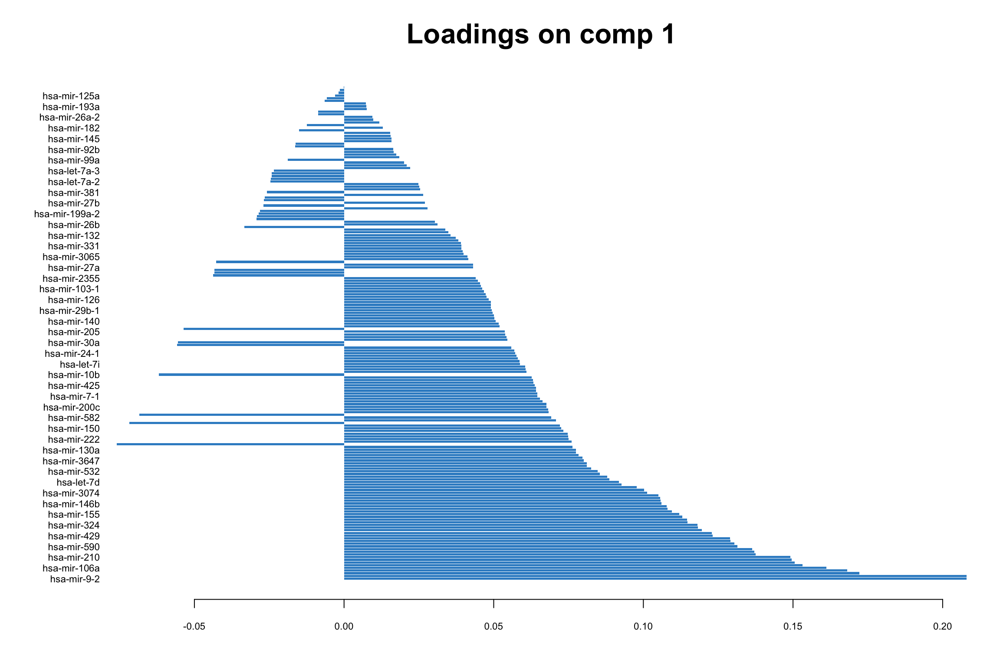
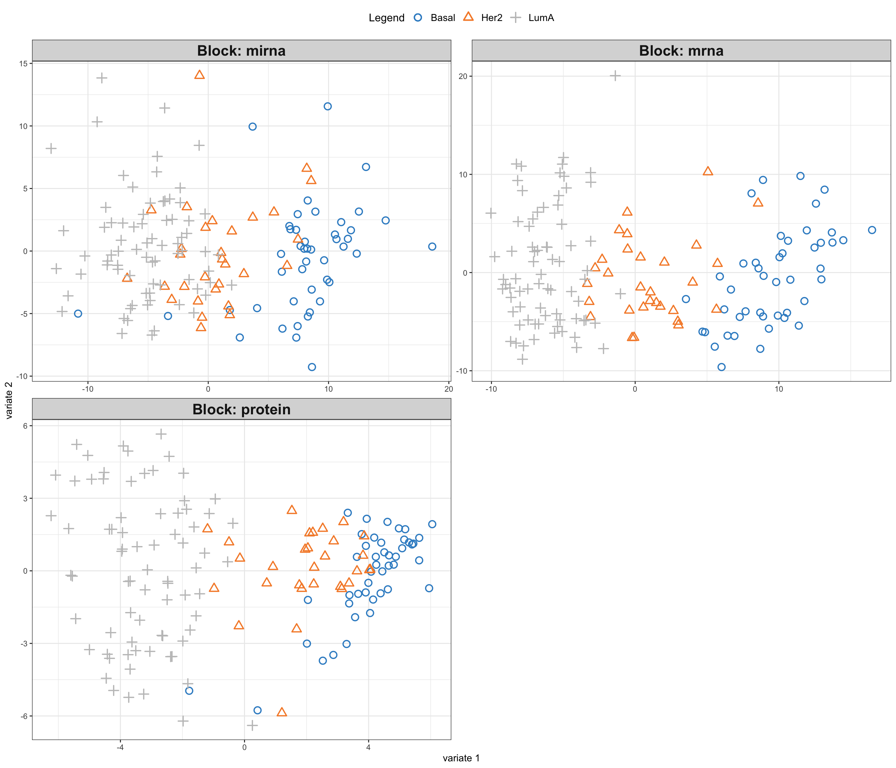
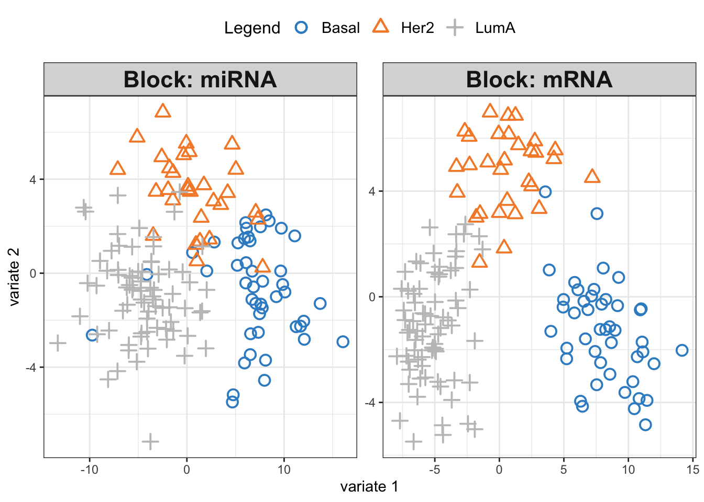
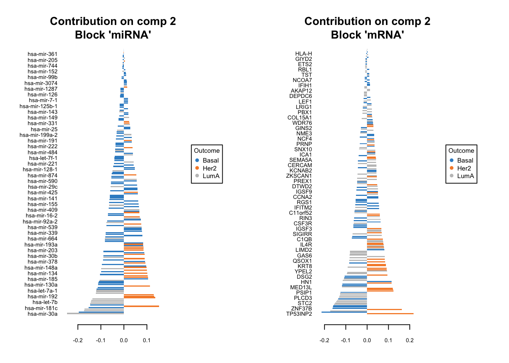

# list of packages to be installed
packages <- c("mixOmics")
# check and install missing packages
new_packages <- packages[!(packages %in% installed.packages()[,"Package"])]
if(length(new_packages)) install.packages(new_packages, dependencies = TRUE, type = "binary")
# load the libraries
library(mixOmics)Set up the environment
Introduction
In classical data integration, we would like to use information across different modalities (e.g. transcriptome, proteome and metabolome) to gain more comprehensive insights into the biological systems under study. This type of data can be used for an array of different purposes including but not limited to molecular classification, stratification of patients, outcome predictions and understanding of regulatory processes such as gene regulation and pathway analysis.
We are going to see how to work with mixOmics package both for unsupervise and supervise method integration, using methods that under the hood are derived based on matrix decomposition techniques, such as Singular Value Decomposition (SVD).
Data
We will use TCGA data set from mixOmics, where features are in the columns and samples in the rows.
This data set is a small subset of the full data set from The Cancer Genome Atlas. It contains the expression or abundance of three matching omics data sets: mRNA, miRNA and proteomics for 150 breast cancer samples (with three molecular subtypes of breast cancer: Basal, Her2, Luminal A) in the training set, and 70 samples in the test set. The test set is missing the proteomics data set.
# download the dataset
download.file("https://github.com/mixOmicsTeam/mixOmics/raw/master/data/breast.TCGA.rda", destfile = "TCGA.rda")
# load the data
load("TCGA.rda")This data, when loaded, has already been split into a list with two elements: training and testing. The first element (training) contains four elements, again lists, containing miRNA, mRNA, proteomics and cancer molecular subtypes. The second element (testing) contains three lists holding miRNA, mRNA and molecular subtypes data (proteomics data are missing here).
# preview data
str(breast.TCGA)List of 2
$ data.train:List of 4
..$ mirna : num [1:150, 1:184] 11.8 12.9 12.3 12 13.4 ...
.. ..- attr(*, "dimnames")=List of 2
.. .. ..$ : chr [1:150] "A0FJ" "A13E" "A0G0" "A0SX" ...
.. .. ..$ : chr [1:184] "hsa-let-7a-1" "hsa-let-7a-2" "hsa-let-7a-3" "hsa-let-7b" ...
..$ mrna : num [1:150, 1:200] 4.36 1.98 1.73 4.36 2.45 ...
.. ..- attr(*, "dimnames")=List of 2
.. .. ..$ : chr [1:150] "A0FJ" "A13E" "A0G0" "A0SX" ...
.. .. ..$ : chr [1:200] "RTN2" "NDRG2" "CCDC113" "FAM63A" ...
..$ protein: num [1:150, 1:142] 0.0491 -0.08 -0.0328 -0.2053 0.0602 ...
.. ..- attr(*, "dimnames")=List of 2
.. .. ..$ : chr [1:150] "A0FJ" "A13E" "A0G0" "A0SX" ...
.. .. ..$ : chr [1:142] "14-3-3_epsilon" "4E-BP1" "4E-BP1_pS65" "4E-BP1_pT37" ...
..$ subtype: Factor w/ 3 levels "Basal","Her2",..: 1 1 1 1 1 1 1 1 1 1 ...
$ data.test :List of 3
..$ mirna : num [1:70, 1:184] 12.8 13.9 12.9 12.4 13.1 ...
.. ..- attr(*, "dimnames")=List of 2
.. .. ..$ : chr [1:70] "A54N" "A2NL" "A6VY" "A3XT" ...
.. .. ..$ : chr [1:184] "hsa-let-7a-1" "hsa-let-7a-2" "hsa-let-7a-3" "hsa-let-7b" ...
..$ mrna : num [1:70, 1:200] 1.19 2.73 3.05 2.7 3.14 ...
.. ..- attr(*, "dimnames")=List of 2
.. .. ..$ : chr [1:70] "A54N" "A2NL" "A6VY" "A3XT" ...
.. .. ..$ : chr [1:200] "RTN2" "NDRG2" "CCDC113" "FAM63A" ...
..$ subtype: Factor w/ 3 levels "Basal","Her2",..: 1 1 1 1 1 1 1 1 1 1 ...PCA (one data set)
Principal Component Analysis, PCA, is a special case of SVD in which basic vectors, or principal components, are the eigenvectors of the data’s covariance matrix. These principal components are orthogonal and represent the directions of maximum variance in the data. If you want to know more about PCA look at here.
PCA might sound complex at first, but it can be understood intuitively as a method for simplifying and summarizing complex, multidimensional data. It is applicable to one data set at the time.
Imagine a data set containing the expression levels of thousands of genes from a group of individuals. Each individual is represented by a complex data sample characterized by the expression levels of all these genes. Visualizing or analyzing such high-dimensional data can be very difficult.
PCA simplifies this complex, multidimensional space by identifying the “principal components” of the data, which are new axes that capture the most significant patterns in the data. These axes are combinations of the original gene expression levels that explain the maximum variance in the dataset.
For example, the first principal component (PC) might represent a combination of genes that change the most across all individuals. It could capture a general trend in gene expression that separates individuals based on age or response to a treatment. The second PC, orthogonal to the first, might capture the next highest variance, showing another layer of structure in the data, and so on.
PCA with mixOmics
There are many implementation of PCA algorithm, e.g. prcomp() function in R. mixOmics implements a very powerful PCA method that provide us not only with standard PCA but also with extra advantages such as handling of missing value, plotting and taking into account repeated measurements.
# extract miRNA data set from the training split
data_mirna <- breast.TCGA$data.train$mirna
# do PCA using mixOmics
pca_mixomics <- mixOmics::pca(data_mirna, ncomp = 2, center = TRUE)
pca_mixomics <- mixOmics::pca(data_mirna, ncomp = 2, center = TRUE)
# plot the PCA
mixOmics::plotIndiv(pca_mixomics,
group=breast.TCGA$data.train$subtype,
ind.names = F,
legend = T,
title = "miRNA PCA")
In the function above, we have performed a PCA with two components on miRNA data. The first principal component (PC1) captures 23% of the total variance, while the second principal component (PC2) accounts for an additional 9%. This means that together, PC1 and PC2 provide a simplified representation that encapsulates 32% of the total variability in the miRNA data.
Examining the PCA plot, we can notice distinct patterns. The Basal cancer subtype is clustered on the right side of the plot, indicating an unique miRNA expression profile that is markedly different from the other subtypes. In contrast, the HER2 and LumA subtypes are more centered and somewhat intermingled towards the left, suggesting overlapping or similar patterns of miRNA expression. Most of the differences are represented in the PC1, so it is probably our most important factor to focus on!
This observed separation and overlap in the PCA plot is not just a graphical representation but is rooted in the underlying biology of these cancer subtypes. The positioning of the different groups on the PCA plot is influenced by the expression levels of various miRNAs, each contributing differently to the principal components.
Now, as we go deeper into understanding the PCA plot, it becomes essential to explore the concept of loadings. Loadings help us to interpret the contribution of each miRNA to the principal components. They provide insights into which specific miRNAs are driving the separation between different cancer subtypes observed on the PCA plot.
We can go ahead and plot the loadings. We start with our most important PC, that is PC1
# loadings for component 1
mixOmics::plotLoadings(pca_mixomics, comp = 1)
In this bar plot, each bar represents a specific miRNA. The length of the bar corresponds to the value of the loading of that miRNA on PC1, indicating its contribution to this principal component. The miRNAs with the highest absolute contributions are at the bottom, and those with the lowest are at the top, making it easy to identify the most influential miRNAs. Both the length and direction of each bar provide crucial insights into the miRNA’s contribution to the first principal component (PC1). The length of the bar signifies the magnitude of the miRNA’s contribution. Longer bars indicate miRNAs that have a more substantial influence on the variance captured by PC1, highlighting them as key elements in distinguishing different patterns of gene expression within the dataset.
The direction of the bar adds another layer of interpretation. Bars extending to the right represent miRNAs that are positively correlated with PC1, indicating that as the values of these miRNAs increase, so does the score of PC1. Conversely, bars extending to the left suggest a negative correlation, meaning as the values of these miRNAs increase, the score of PC1 decreases. This directional information can be important in understanding the expression patterns of miRNAs in different breast cancer subtypes. For instance, miRNAs that are positively correlated with PC1 might be highly expressed in the Basal subtype but low in others, offering insights into the molecular distinctions between these cancer subtypes.
Limitations with more data sets
Score plot together with loading give us powerful tool to investigate patterns in a single data set. But how about if we have multiple data sets? Can we simply go ahead and merge multiple data sets into one and do PCA on this merged data?
While it might be tempting to merge multiple data sets into one and proceed with PCA, this approach has several challenges and limitations. Different data sets can have variations in terms of units, scales, and data collection methods. Simply merging them without addressing these issues can lead to misleading PCA results, where the observed variance is more a reflection of the data sets’ inconsistencies rather than underlying biological patterns. In addition, when data sets are collected at different times, locations, or under different conditions, batch effects can occur. These systematic non-biological differences can confound the PCA results, making it difficult to detect true patterns and relationships within the data. This leads us to multi-omics analysis, where techniques like Canonical Correlation Analysis (CCA) offer ways to detect correlated patterns between two or more omics data sets, and provide a more holistic view of the underlying biological processes.
CCA and GCCA (beyond one data set)
Canonical Correlation Analysis, CCA, is similar to PCA with the capability to analyze multivariate correlations between two data sets. While PCA focuses on maximizing variance within a single dataset, CCA identifies linear combinations of variables from two data sets that are maximally correlated. These linear combinations of variables are known as canonical variables. CCA provides pairs of canonical variables and their associated canonical correlations, giving insights into the shared structure and relationships between the data sets. This is particularly suited in multi-omics studies, where understanding the interplay between different types of biological data is crucial.
Generalized Canonical Correlation Analysis (GCCA) extends CCA to multiple data sets.
GCCA with mixOmics
mixOmics package provides us with a very good interface to do GCCA with a lot of flexibility. The main function is called wrapper.sgcca() and we are now going to have a look some its main functionality.
# center the data of individual omics
X_centered <- scale(breast.TCGA$data.train$mirna, scale = FALSE)
Y_centered <- scale(breast.TCGA$data.train$mrna, scale = FALSE)
Z_centered <- scale(breast.TCGA$data.train$protein, scale = FALSE)
# create a list with data for easier access
data_merged <- list(mirna=X_centered, mrna=Y_centered, protein=Z_centered)
# perform a simple GCCA
gcc_three_datasets <- mixOmics::wrapper.sgcca(data_merged, ncomp = 2, scale = FALSE)
# plot
mixOmics::plotIndiv(gcc_three_datasets, group = breast.TCGA$data.train$subtype,
ind.names = FALSE, legend = TRUE, legend.position = "top")
So here comes the similar score plot of GCCA. We can clearly see the shared latent factors discovered by GCCA, separating our three groups. We can investigate loadings to know more about what variables has more influence on these latent components.
# plot top 20 loadings
mixOmics::plotLoadings(gcc_three_datasets, comp = 1, ndisplay = 20, size.title = 1) 
Here, instead of having a single loading plot we have three, one for each omics. The interpretation is the same as previously for the PCA loadings. The higher the absolute value the more influence a particular variable has on the latent scores.
There are options provided by the wrapper.scgcca() function. We are going to focus on the most important ones, namely design and keepX.
design
As we previously demonstrated, we can weight the scores from different omics before combining them. The design parameter gives us a powerful way of choosing which data view to focus on more and define the relation between the data.
Think of design as a grid where each cell’s value, ranging from 0 to 1, indicates the strength of the relationship between two corresponding data blocks. A value of 0 means no relationship, while 1 signifies a strong connection. When you are setting up your analysis, adjusting these values can help you emphasize or de-emphasize certain relationships, giving you the flexibility to focus on interactions that are of interest.
For instance, if you are curious about how two particular blocks of data interact, you’d set their corresponding value in the design matrix closer to 1. This tells sGCCA, “Hey, pay extra attention here!” Conversely, if you believe two other blocks are not significantly related, setting their value closer to 0 directs the analysis to not invest much energy in exploring that connection.
In our previous example, we chose not to provide a design matrix, in this case, mixOmics will construct a design matrix in all data sets have strongest connect (1) to each other.
# show design matrix constructed by default by mixOmics
rownames(gcc_three_datasets$design) <- colnames(gcc_three_datasets$design) <- names(data_merged)
print(gcc_three_datasets$design) mirna mrna protein
mirna 0 1 1
mrna 1 0 1
protein 1 1 0keepX
keepX is used in refining GCCA analysis by controlling number of variables to retain in each block of data during the analysis. keepX is like a filter that helps you keep only the most valuable variables, enhancing the clarity and focus of your analysis. You provide a vector of integers to keepX, each integer corresponding to the number of variables you want to retain from each data block. It is a balancing act - retaining more variables can capture complex patterns but might also introduce noise. On the other hand, keeping fewer variables simplifies the model but might miss out on nuanced interactions. Adjusting keepX is a practical step in iterative model refinement, ensuring that your analysis is both robust and focused, honing in on the most informative variables to answer your specific research questions.
Exercise 1 (Design and keepX)
Can you construct a design matrix to specify relationships between mRNA, miRNA and protein data set? Set the relationship between mRNA and protein to 0.9, between mRNA and miRNA to 0.8 and between protein and miRNA to 0.7.
Retain only 10 variables for each omics.
Run the GCCA and plot the data and loadings.
Compare the results to previous GCCA analysis. Any differences?
Show the code
# define design matrix
# show design matrix constructed by default by mixOmics
design <- matrix(data = c(0, 0.8, 0.7, 0.8, 0, 0.9, 0.7, 0.9, 0), nrow = 3, byrow = TRUE)
rownames(design) <- colnames(design) <- names(data_merged)
# perform GCCA
gcc_three_datasets <- mixOmics::wrapper.sgcca(data_merged, ncomp = 2, scale = FALSE,
design = design,
keepX = list(mirna = 10, mrna = 10, protein = 10))
# plot
mixOmics::plotIndiv(gcc_three_datasets, group = breast.TCGA$data.train$subtype,
ind.names = FALSE, legend = TRUE, legend.position = "top")
# plot top 10 loadings
mixOmics::plotLoadings(gcc_three_datasets, comp = 1, ndisplay = 10, size.title = 1) Supervised integration
So far we have been dealing with unsupervised data integration, using only the training part of the TCGA for this purpose. At no point we were trying to make predictions for the cancer subtypes for the testing part of the data.
In supervise data integration, we want to use the training data, across many omics, to build a model to represent the data and linking it to the outcome, here cancer subtype. Once we have a good model we can use it to make predictions for the samples not seen previously by the model, here our testing data.
Partial Least Squares and block PLS
PLS
We are now going to define an outcome variable and use that to perform supervised data integration. This is where Partial Least Squares (PLS) comes into play, a method that not only facilitates the integration of data from various sources but also enables the prediction of an outcome variable by identifying the relationships between observed variables and the outcomes of interest.
PLS serves as a bridge between principal component analysis (PCA) and regression analysis. PLS is particularly useful when dealing with complex, high-dimensional, and multicollinear data, where traditional regression models may falter due to overfitting or multicollinearity issues.
In PLS, the predictor variables (or features such as miRNA or mRNA) and the response variables (or outcomes such as cancer subtypes) are projected to a new subspace formed by latent variables (or components). These latent variables are linear combinations of the original variables and are constructed in such a way that they maximize the covariance between the predictors and the response. This is a key distinction from PCA, which only considers the variance of the predictor variables.
A classical version of PLS is applicable to two data sets only. For instance we could try to use miRNA data set as explanatory one and regress it onto protein data sets (outcome). We would end up with the single pairs of scores which maximize the covariance between miRNA and protein data sets. You can think about PLS as ordinary regression where both the predictor and response variables are simultaneously transformed to a new space defined by latent variables. These latent variables are constructed to maximize the covariance between the transformed predictor and response variables, ensuring that the most relevant features for prediction are captured.
PLS-DA is an extension of PLS designed for classification tasks, where it helps differentiate between predefined classes or groups based on multivariate data. For instance, in our case we could try to use PLS-DA to predict cancer subtypes based on one of the omics such as miRNA. Note, the difference, to the PLS above, where we used miRNA data to explain protein values (regression task).
Finally, both PLS and PLS-DA can be expanded to include multiple data sets, such as miRNA and mRNA, in block PLS. This can be use both for classification and regression.
DIABLO
Using mixOmics one can perform multi block PLS using block.pls function. DIABLO is the name of the mixOmics framework that implements multi block PLS-DA (see here. Let’s try it out on miRNA and mRNA to eventually predict the cancer subtypes.
We start by defining the training data, based on miRNA and mRNA.
# define training data
training_data = list(miRNA = breast.TCGA$data.train$mirna,
mRNA = breast.TCGA$data.train$mrna)
Y_training <- breast.TCGA$data.train$subtypeWe need also to introduce the concept of design matrix. Here, it is a different concept than a design matrix used to capture study design, e.g. when running linear models for gene expression in packages as edgeR.
Here, think of design as a grid where each cell’s value, ranging from 0 to 1, indicates the strength of the relationship between two corresponding data blocks. A value of 0 means no relationship, while 1 signifies a strong connection. When you are setting up your analysis, adjusting these values can help you emphasize or de-emphasize certain relationships, giving you the flexibility to focus on specific interactions that are of interest.
Choosing the magnitude of the relationship is not straightforward. It for example can be from previous experiments or so. But generally choosing a very high value will have negative impact on the prediction ability of the model. Choosing a very low value on the other hand will cause discarding the relationship between the data blocks. Here we randomly choose to go with 0.2 to describe the strength of relationship between miRNA and RNA. In practice one might want to do Sensitivity Analysis or Cross-Validation to try to optimize this value.
# define square matrix filled with 0.2
design = matrix(0.2, ncol = length(training_data), nrow = length(training_data),
dimnames = list(names(training_data), names(training_data)))
diag(design) = 0 # set diagonal to 0s
print(design) miRNA mRNA
miRNA 0.0 0.2
mRNA 0.2 0.0We can now proceed with running the analysis
library(mixOmics)
diablo.model = block.splsda(X = training_data, Y = Y_training, ncomp = 2, design = design) Design matrix has changed to include Y; each block will be
linked to Y.Right now we have a model that includes two components. We can go ahead and visualize the PLS scores.
# plot results
plotIndiv(diablo.model,ind.names = F,
legend = T, legend.position = "top")
We see three separate clusters formed in the PLS space in both OMICS. That looks great! But this can be misleading. We need to be able to systematically say how good our model’s performance is before making any interpretation. This means we need to check whethever we have fitted the data well enough or wherever we have overfitted the data.
Overfitting occurs when a model is too complex, capturing noise in the training data and making it less effective in generalizing to new, unseen data. It essentially “memorizes” the training data, leading to excellent performance on that specific dataset but poor performance on a new data set. To mitigate overfitting and evaluate the model’s performance accurately, we employ techniques like cross-validation. Cross-validation involves partitioning the original training data set into a training set and a validation set. The model is then trained (build) on the training set and evaluated on the validation set. This process is repeated several times, with different partitions, to obtain a more generalized model performance metric. Techniques like k-fold cross-validation, where the original training set is divided into k subsets and the model is trained k times, each time using a different subset as the validation set, are commonly used. This rigorous evaluation process helps in assessing the model’s ability to generalize, ensuring that it performs well not just on the training data, but on unseen data as well. For more information see here.
mixOmics provides us with a function (perf) to evaluate the model using cross-validation. We are going to do a 10-fold cross-validation and repeat it 10 times. This means that the entire dataset is divided into 10 equal parts, or “folds”. In each iteration, 9 folds are used for training the model, and the remaining fold is used for testing. This process is repeated 10 times, with each fold getting a chance to be the test set. The model’s performance is then averaged over all the iterations to get a more stable and reliable estimate of its performance. Repeating the entire 10-fold cross-validation process 10 times helps in reducing the variability associated with the random splitting of data and provides a more robust measure of the model’s accuracy and generalizability. Each repetition involves a different random split of the data into folds, ensuring diverse training and testing combinations and thus, a comprehensive evaluation.
diablo.model = block.splsda(X = training_data,
Y = Y_training,
ncomp = 2,
design = design) Design matrix has changed to include Y; each block will be
linked to Y.set.seed(123)
perf.diablo = perf(diablo.model,
validation = 'Mfold',
folds = 10,
nrepeat = 10)
par(mfrow=c(1,1))
plot(perf.diablo)
Alright. This plots gives us a lot of information. The colors represent which distance measure has been used to assign groups to the test data. As we discussed we can use different distance measurement to predict the classes from the PLS continuous values. In practice these distances should do very similar but one might want to focus on centroid and mahalanobis distance more.
The type of the line (solid and dashed) shown error rate (ER) and balanced error rate (BER) respectively. Error Rate (ER) is the proportion of incorrect predictions made by the model over the total number of predictions, while Balanced Error Rate (BER) is the average error rates across all classes, ensuring that each class contributes equally to the overall error rate, even if the classes are imbalanced in size. In the plot, different line types allow for an easy visual comparison between these two metrics for each distance measure.
The x-axis represents the number of components included in the model, which is a crucial aspect of PLS-DA. By observing how the error rates change with the inclusion of additional components, one can identify the optimal number of components that minimizes the error rates, striking a balance between model complexity and predictive accuracy.
In evaluating these plots, one should look for the point where both ER and BER are minimized, indicating optimal model performance. Special attention should be given to the results obtained using centroid and Mahalanobis distances, as they often provide a more nuanced and reliable classification, especially in complex multiclass scenarios or when the data distribution is not straightforward. By comparing the error rates associated with different distance measures and numbers of components, one can fine-tune the PLS-DA model for optimal classification performance.
perf functions gives a lot of other information but probably the most useful ones are:
- auc: Averaged AUC values over the nrepeat (if requested)
- MajorityVote.error.rate: ff more than one block, returns the error rate of the MajorityVote output
Have a look at the help page of the function to know more.
Now we know that we do actually fairly good because low error rate, meaning that the model is usable.
Exercise 2 (DIABLO) Can we make the above model better? Try changing the design matrix to different values, e.g. 0.8 or 0.1 and compare the results of cross-validation.
Show the code
# update design matrix
design_new <- design
design_new[1,2] <- design_new[2,1] <- 0.1
# re-run DIABLO
diablo.model = block.splsda(X = training_data,
Y = Y_training,
ncomp = 2,
design = design_new)
set.seed(123)
perf.diablo = perf(diablo.model,
validation = 'Mfold',
folds = 10,
nrepeat = 10)
par(mfrow=c(1,1))
plot(perf.diablo)
# Comment:
# In this case selecting lower values of connection between mRNA and miRNA yields smaller ER and BER with 2 components
# and selecting high values of 0.8 yields higher ER and BER with 2 components. Tuning number of components
I guess you also asked yourself why we should use two components. Maybe we can go higher? Or lower? We can try to tune number of components by simply including more components in the model and redoing the cross-validation.
diablo.model = block.splsda(X = training_data,
Y = Y_training,
ncomp = 5,
design = design) Design matrix has changed to include Y; each block will be
linked to Y.set.seed(123)
perf.diablo = perf(diablo.model,
validation = 'Mfold',
folds = 10,
nrepeat = 10)
par(mfrow=c(1,1))
plot(perf.diablo)
This is the same plot as before but now we have more component on the x-axis. What this plot tells us that the error rate sharply decreases from ~0.3 to 0.1 just by including two components instead of one. Then we have smaller decrease from component two to three. After that the improvement is very little. So shall we should use 3 components or five? This is where the trade-off between model complexity and performance comes into play. While adding more components can lead to a slight decrease in error rate, it also increases the complexity of the model, which can lead to more difficulty in interpretation etc. So we should go for the least complex model that gives us a reasonable error rate.
mixOmics gives us an automated way of selecting the best component. We can see mixOmics choice using:
print(perf.diablo$choice.ncomp)$AveragedPredict
[,1]
Overall.ER 4
Overall.BER 4
$WeightedPredict
[,1]
Overall.ER 3
Overall.BER 3
$MajorityVote
max.dist centroids.dist mahalanobis.dist
Overall.ER 5 3 3
Overall.BER 4 3 3
$WeightedVote
max.dist centroids.dist mahalanobis.dist
Overall.ER 3 3 4
Overall.BER 3 3 4I this case, we are going to use majority vote and mahalanobis.dist so we we choose three components and redo the analysis.
ncomps <- perf.diablo$choice.ncomp$MajorityVote["Overall.BER","centroids.dist"]
diablo.model = block.splsda(X = training_data,
Y = Y_training,
ncomp = ncomps,
design = design) Design matrix has changed to include Y; each block will be
linked to Y.Variable selection
We now have a working model with a reasonably low error rate. We can use this model to extract the most important features (e.g. miRNA or mRNA) that gave us such a discriminatory pattern we saw in the score plots.
We should do that three times in fact. One for each components. We have one set of loading for each component and for each block of data. it is quite a lot of work to go through these loadings. In the following plots, the bars have a color corresponding the group which has the maximum (max in contrib) of average (mean in method) among all the groups.
plotLoadings(diablo.model, comp=1, contrib='max', method='mean')
plotLoadings(diablo.model, comp=2, contrib='max', method='mean')
plotLoadings(diablo.model, comp=3, contrib='max', method='mean')
Similar to what we said before, the most important variables, according to the absolute value of their coefficients, are ordered from bottom to top. One can go ahead and examine top \(n\) variables, e.g. 10. They have the same interpretation as before: bars extending to the right represent features that are positively correlated with PC1, indicating that as the values of these features increase, so does the score of corresponding component. Conversely, bars extending to the left suggest a negative correlation, meaning as the values of these features increase, the score of the component decreases.
In this specific example we have a limited number of features so it might be feasible to do it manually. However, in practice most omics data sets are large and that will make it very difficult to choose a right cutoff to select the number of features per omics.
Fortunately, mixOmics gives us an automated way of selecting variables using tune.block.splsda function. The only thing we have to do is to select a grid of plausible values for each component to test. mixOmics will then do cross-validation and try to give us the most influential variables on the model and discard the rest. This means that, given a vector of possible number of variables, the function will pinpoint the optimal subset that contributes the most to our model’s predictive power, ensuring both efficiency and accuracy in our analysis.
# set grid of plausible values for each component to test
test.keepX = list (mirna =seq(10, 18, 2),
mrna = seq(10, 18, 2))
# run the feature selection tuning
set.seed(123)
tune.TCGA = tune.block.splsda( training_data, Y = Y_training, ncomp = ncomps,
test.keepX = test.keepX, design = design,
validation = 'Mfold', folds = 10, nrepeat = 1,
dist = "centroids.dist")Design matrix has changed to include Y; each block will be
linked to Y.
You have provided a sequence of keepX of length: 5 for block mirna and 5 for block mrna.
This results in 25 models being fitted for each component and each nrepeat, this may take some time to run, be patient!
You can look into the 'BPPARAM' argument to speed up computation time.plot(tune.TCGA)
This bar plot can help us seeing the process of variable selection. In each component the x-axis is BER and y-axis is the combination of the number of selected variable in omics1 (mirna) and omics2 (mrna) which has been written as omics1_omics2 (for example 10_12 means 10 variables from mirna and 12 variables from mrna block). Again we are going to look for the least complex (fewer variables) model with lower BER. In component one the top 5 selections are in the top of the plot, the least numbers among them is 10_16, similarly we can select 10_14 for the second component and 10_18 for the last one. mixOmics also gives us these numbers in choice.keepX list.
print(tune.TCGA$choice.keepX)$miRNA
[1] 10 10 10
$mRNA
[1] 16 14 18Now that we have the number of variables we can go ahead and do the final model:
# set the optimised DIABLO model
final.diablo.model = block.splsda(training_data,
Y = Y_training,
ncomp = ncomps,
keepX = tune.TCGA$choice.keepX,
design = design)Design matrix has changed to include Y; each block will be
linked to Y.Now for each components we can see which variables have been selected. For example for component 1.
selectVar(final.diablo.model, block = 'miRNA', comp = 1)$miRNA$name [1] "hsa-mir-17" "hsa-mir-505" "hsa-mir-590" "hsa-mir-130b" "hsa-mir-20a"
[6] "hsa-mir-106a" "hsa-mir-106b" "hsa-mir-197" "hsa-mir-186" "hsa-let-7d" What are the variables for mRNA?
Show the code
selectVar(final.diablo.model, block = 'mRNA', comp = 1)$miRNA$name Should we go ahead with these variables? Well, maybe! In that case we need to do last performance check of the final model.
set.seed(123)
perf.diablo = perf(final.diablo.model, validation = 'Mfold',
folds = 10, nrepeat = 10)
par(mfrow=c(1,1))
plot(perf.diablo)
So based on what we see, we are seeing similar performance using only maximum of 18 variables. However, please note that these variables are not fixed when doing cross-validation. This means that different subsets of variables might be selected in different folds of the cross-validation, leading to variability in the selected features. This variability underscores the importance of feature stability, a crucial aspect to consider when evaluating the reliability of the selected features. It is not just about how well the model performs, but also about how consistent the selected features are across different subsets of the data.
Moving towards variable stability, it becomes essential to assess the robustness of the selected variables. Are these variables consistently selected across different folds and repetitions of cross-validation? If a variable is often selected, it indicates that its inclusion in the model is not a product of random chance or specific to a particular subset of data, enhancing our confidence in its relevance and reliability.
In the context of mixOmics and DIABLO, the perf() function provides insights into feature stability. By examining the stability scores, we can identify which features are consistently selected across multiple iterations of the model fitting process. A higher stability score indicates that a feature is consistently chosen across different folds and repetitions, marking it as a reliable variable that contributes significantly to the model’s predictive power. Check the Detailed Version of this lab, if interested how to examine the stability scors.
Final model
We finally have our fantastic model ready. It gives us good performance.
plotIndiv(final.diablo.model, ind.names = FALSE,
legend = TRUE,
legend.position = "top",
title = 'DIABLO Sample Plots')
Visual inspection of the scores reveals a pronounced separation between the three cancer subtypes, suggesting that our selected variables hold significant discriminatory power. We can have a look at how these variables influence the shared space:
plotVar(final.diablo.model, var.names=TRUE, legend=TRUE)
This is Correlation Circle Plot, a visual representation that overlays the loadings (from variables) from each omic layer. In this plot, when variables cluster near each other specially closer to the poles, it indicates a strong correlation among them, even if they originate from different omic layers. Conversely, variables positioned on opposing poles suggest a strong negative correlation. Correlation Circle Plot offers insights into feature-level interactions, revealing the relationships among variables across different omic layers.
Network visualization
While integration has allowed us to construct this shared space and see the top variables, its true potential lies in understanding the the interactions among the variables. To go deeper into these interactions and uncover the underlying network of relationships, we can utilize mixOmics network visualization and the cim function, offering a comprehensive view of how these features interplay across different omics layers.
par(mfrow=c(1,1))
set.seed(123)
mixOmics_graph <- network(final.diablo.model, cutoff = 0.5,
color.node = c("gold", "tomato"),
shape.node = c("rectangle", "circle"),
lty.edge = "solid", lwd.edge = 1, cex.node.name = 0.4,
show.edge.labels = T, interactive = FALSE, graph.scale = 0.3)
The above network is simply the results of calculating the correlation between the variables in the loadings space. We have selected to put the correlation cutoff on 0.7, resulting removing the variables that have no edges (lines).
Predicting new cases
Now that we have the model, we can use it to predict new data, cancer subtypes unseen so far by the model.
# organize test data
test_data = list(miRNA = breast.TCGA$data.test$mirna,
mRNA = breast.TCGA$data.test$mrna)
# predict cancer subtypes
predicted_class_test <- mixOmics:::predict.mint.splsda(final.diablo.model,test_data)
pred_classes_test <- predicted_class_test$WeightedVote$centroids.dist[,3]
readl_classes_test <- breast.TCGA$data.test$subtype
# create a confusion matrix
conf_matrix <- table(readl_classes_test, pred_classes_test)
# calculate the class error rates
class_error <- 1 - diag(conf_matrix) / rowSums(conf_matrix)
# calculate the overall error rate
overall_error_rate <- (sum(conf_matrix) - sum(diag(conf_matrix))) / sum(conf_matrix)
# BER
print(mean(class_error))
## [1] 0.04444444
# Overall
print(overall_error_rate)
## [1] 0.05714286This error rate is very good. So our model performs reasonably.
Was the integration successful?
In the case of the cancer suptypes prediction, we might want to ask the question if the integration is necessary or not?
We are going to test this by first doing separate PLSDA on each omics and compare the performance to the integrated one. So we are trying to do everything as similar as possible and check the error rates.
miRNA_plsda <- splsda(training_data$miRNA, Y_training, ncomp = 5)
perf.diablo_miRNA_plsda = perf(miRNA_plsda,
validation = 'Mfold',
folds = 10,
nrepeat = 10)
mRNA_plsda <- splsda(training_data$mRNA, Y_training,ncomp = 5)
perf.diablo_mRNA_plsda = perf(mRNA_plsda,
validation = 'Mfold',
folds = 10,
nrepeat = 10)
# set grid of values for each component to test
test.keepX = list (mirna =seq(10, 18, 2),
mrna = seq(10, 18, 2))
# run the feature selection tuning
set.seed(123)
tune.miRNA_plsda = tune.splsda(training_data$miRNA, Y = Y_training,
ncomp = perf.diablo_miRNA_plsda$choice.ncomp["BER","centroids.dist"],
test.keepX = test.keepX$mirna,
validation = 'Mfold',
folds = 10,
nrepeat = 1,
dist = "centroids.dist")Note that the number of components cannot be reliably tuned with nrepeat < 3 or validaion = 'loo'.set.seed(123)
tune.mRNA_plsda = tune.splsda(training_data$mRNA, Y = Y_training,
ncomp = perf.diablo_mRNA_plsda$choice.ncomp["BER","centroids.dist"],
test.keepX = test.keepX$mrna,
validation = 'Mfold',
folds = 10,
nrepeat = 1,
dist = "centroids.dist")Note that the number of components cannot be reliably tuned with nrepeat < 3 or validaion = 'loo'.final_miRNA_plsda <- splsda(training_data$miRNA, Y_training,
ncomp = perf.diablo_miRNA_plsda$choice.ncomp["BER","centroids.dist"],
keepX = tune.miRNA_plsda$choice.keepX)
perf.diablo_miRNA_plsda = perf(final_miRNA_plsda,
validation = 'Mfold',
folds = 10,
nrepeat = 10)
final_mRNA_plsda <- splsda(training_data$mRNA, Y_training,
ncomp = perf.diablo_mRNA_plsda$choice.ncomp["BER","centroids.dist"],
keepX = tune.mRNA_plsda$choice.keepX)
perf.diablo_mRNA_plsda = perf(final_mRNA_plsda,
validation = 'Mfold',
folds = 10,
nrepeat = 10)
print("Erro rates for Integrated analysis")[1] "Erro rates for Integrated analysis"perf.diablo$WeightedPredict.error.rate["Overall.BER",] comp1 comp2 comp3
0.33333333 0.08814815 0.07866667 print("Erro rates for miRNA analysis")[1] "Erro rates for miRNA analysis"perf.diablo_miRNA_plsda$error.rate$BER[,"centroids.dist"] comp1 comp2
0.2589630 0.2152593 print("Erro rates for mRNA analysis")[1] "Erro rates for mRNA analysis"perf.diablo_mRNA_plsda$error.rate$BER[,"centroids.dist"] comp1 comp2 comp3
0.09303704 0.08074074 0.08600000 print("Prediction on the test set")[1] "Prediction on the test set"predicted_class_test <- predict(final_miRNA_plsda,test_data$miRNA)
pred_classes_test<-predicted_class_test$class$centroids.dist[,final_miRNA_plsda$ncomp]
readl_classes_test <- breast.TCGA$data.test$subtype
# create a confusion matrix
conf_matrix <- table(readl_classes_test, pred_classes_test)
# calculate the class error rates
class_error <- 1 - diag(conf_matrix) / rowSums(conf_matrix)
# calculate the overall error rate
overall_error_rate <- (sum(conf_matrix) - sum(diag(conf_matrix))) / sum(conf_matrix)
print("miRNA")[1] "miRNA"print("BER:")[1] "BER:"print(mean(class_error))[1] 0.168254print("Overall")[1] "Overall"print(overall_error_rate)[1] 0.1857143#######
predicted_class_test <- predict(final_mRNA_plsda,test_data$mRNA)
pred_classes_test<-predicted_class_test$class$centroids.dist[,final_mRNA_plsda$ncomp]
readl_classes_test <- breast.TCGA$data.test$subtype
# create a confusion matrix
conf_matrix <- table(readl_classes_test, pred_classes_test)
# calculate the class error rates
class_error <- 1 - diag(conf_matrix) / rowSums(conf_matrix)
# calculate the overall error rate
overall_error_rate <- (sum(conf_matrix) - sum(diag(conf_matrix))) / sum(conf_matrix)
print("miRNA")[1] "miRNA"print("BER:")[1] "BER:"print(mean(class_error))[1] 0.03492063print("Overall")[1] "Overall"print(overall_error_rate)[1] 0.04285714What do you think? Did the integration improve anything?